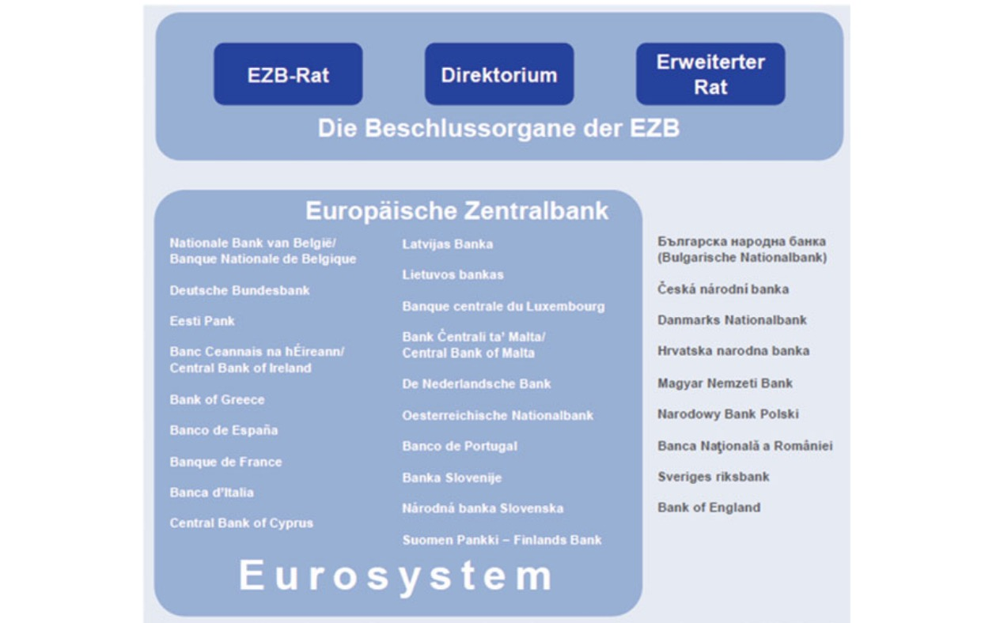
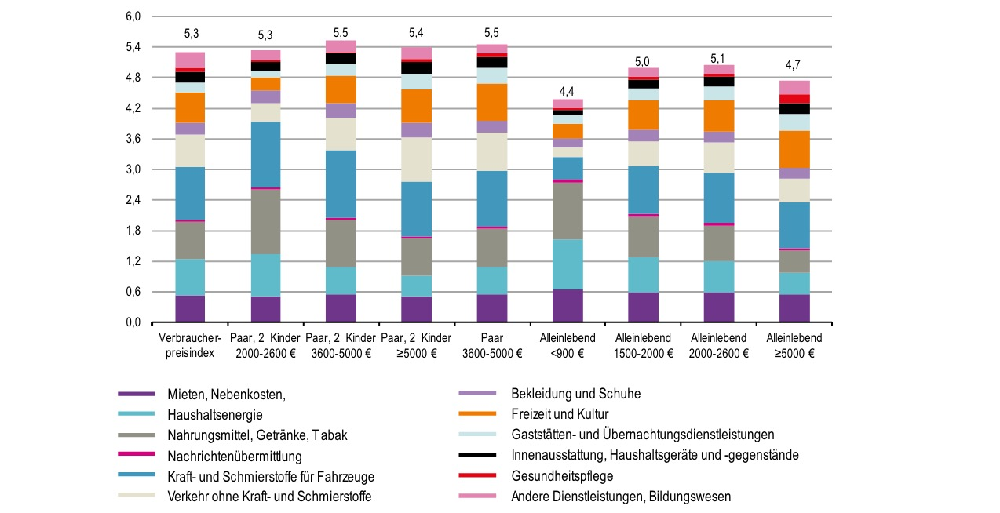
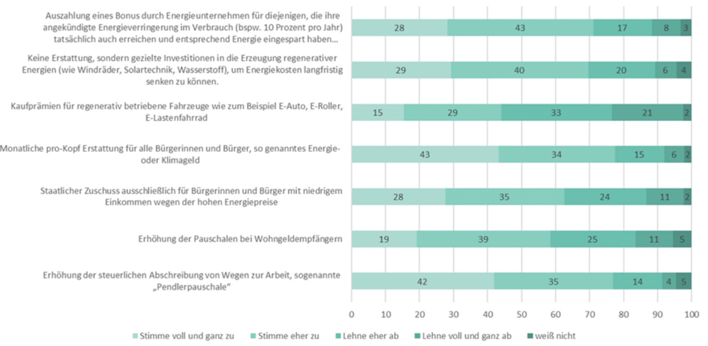
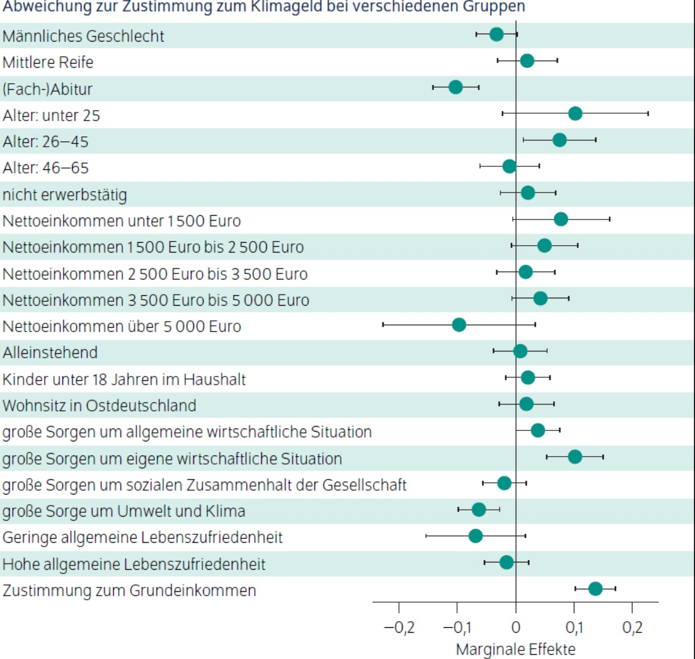
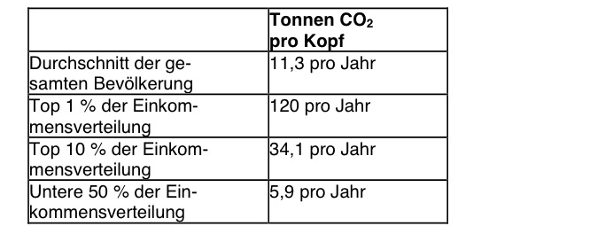
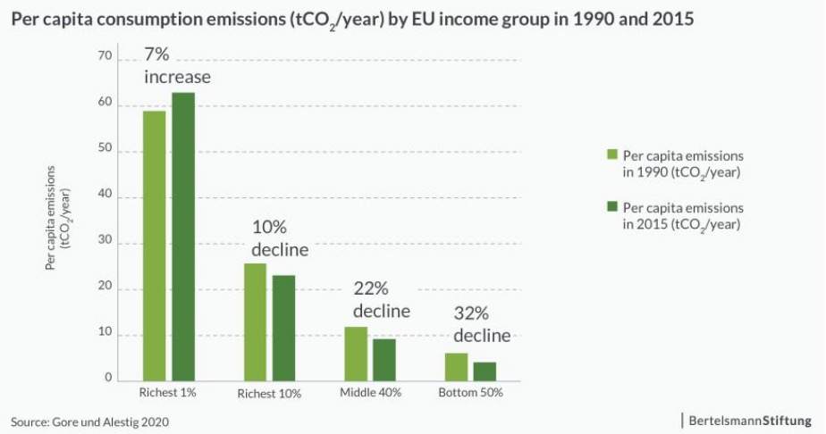
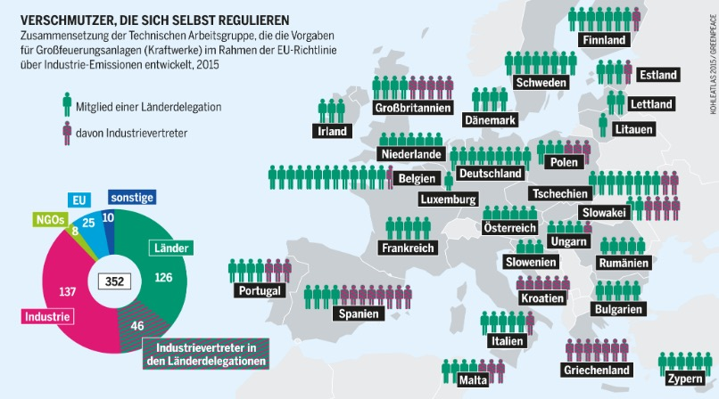

Lesenotizen#
2a) Digitale Macht#
title: "Big Data als Geschäftsmodell: Wie mit der Macht der Internetfirmen umgehen?"
author: Katarina Barley
date: 2018
Verschwimmung online-offline
Alle industriellen Revolutionen - wie umgehen? => staatliche Aufabe = Gestaltung + Folgenschätzung
Zustand#
starke Dependenz auf Digitalplattformen
GDP-Benefit = 17500$ Suchaschinen
Potenzial für Gesellschaft
aber Bedrohund Diskurs durch Tracking
Diskriminierung aufgrund Bias
Forderung#
Überprüfbarkeit von Algorithmen
Mithilfe Transparenz
Entscheidungsschwach bei Usern über Ausmaß Digitalisierung
Selbstbestimmung
2b) Kartellrecht digital#
title: "KOnzernmacht in der Digitalen Welt"
author: "Kampagne Konzernmacht beschränken"
date: Dez 2018
Zustand#
soziale Ungleichheit durch Digitalisierung
Verschiebung Arbeit + Kapital
entfesselter Wettbewerb
Negative Folgen insbesondere. Schwellenländer
Daten als Rohstoff#
Daten = Rohstoff neuer Ökonomie
Auswertung über Persönlichkeit etc
Unzureichende Infos
Vorteile Großunternehmen:
Datenvorpsrung
Netzwerk Effekte
Kombination von Diensten
=> Gatekeeper
Problem:
Erfassung großer Unternehmen
keine Wettbewerbstheorien
Kartellrecht: Monopole nicht verboten
Folge: Monopoelisierung
auf Angebot + Nachfrageseite
Demokratiegefahr
intransparente Algorithmen#
Geheimhaltung von Algo
Potenzial der Manipulation
Bspw. Suchmaschinen
Emotionalität gefördert
Forderungen#
stärkeres Kartellrecht
für Schutz der Demokratie
Einschränkung Akquisitionen
Kartellrecht Anpassungen:
Ansatz überdenken, dass Monopole erlaubt sind
nur Konsumentenwohlfahrt relevant
Reduziert auf Preise
Missbrauch untersuchen
Mittelaufstockung für Behörde
Sektoruntersuchungen
Kopplungsverbot
Selbtsbevorzugungsverbot
Datenschutzaspekt stärken
Bei Untersuchtung Marktstellung
Bei Fusionen
Vorsorgeprinzip bei Fusionen
Zusätzlich:
Datenschutz stärken
Algorithmentransparenz
=> soziale Marktwirtschaft im digitalen Zeitalter
Transformation mitdenken!
3a) EZB in der Krise#
title: "Die Europäische Zentralbank und ihre Rolle in der Krise"
author: Peter Becker et al
date: 2020
EZB Aufbau#
Aufgaben
einheitliche Geldpolitik Euroraum
Preisstabilität
Aufbau
Direktorium (6 unabhängige)
EZB-Rat (Dir. + nationale Zentralbankchefs)

Entschiedungsprozesse im Konsens!
aber keine Lähmung, da im Notfall Mehrheitsregel
Unabhängigkeit: (da effektivere Zieldurchsetzung)
politische / institutionelle U.
Funktionelle U. (Eigene Zielsetzung von 2%)
Persönliche U. (keine Amtsenthebung, einmalig)
Finanzielle U. (eigenes Kapital)
Rechtliche U. (vor EuGH bspw.)
Instrumente#
bis Krise: Leitzinsfestsetzung (unkritisch)
Danach: Erweiterung der Instrumente da Untergrenze erreicht
Liquiditätsausweitung insbesondere durch Offenmarktgeschäfte
Ankauf Staatsanleihen
=> einzige Institution, die Euro gerettet hat
Kritik an EZB#
Mandat
Überschreitung des Kompetenzbereichs
durch OMT (Offenmarktgechäfte) = Staatsfinanzierung
BVerfG- Urteil
Geldpolitischer Kurs
Niedrigzins = Sparenteignung
Deutschland profitiert nicht davon
Leigitimation
Technokraten mit politischer Führungsrolle
insbesondere bei Troika
Exekutive übernimmt Handlungen
Problem der EZB:
sie ist einziger Akteur, der wirklich den Euro rettet
fehlende Fiskalpolitik der Mitgliedsstaaten
keine Alternativen
und sie macht inzwischen viel Outreach
=> institutionelle Architektur der Eurozone muss sich weiterentwickeln!
3b) Haushaltspezifische Inflationsraten#
title: "IMK Policy Brief: Haushaltsspezifische Teuerungsraten"
author: Silke Tober
date: Jan 2022
Haushalte = markante Unterschiede in individueller Inflation
je nach Haushaltstyp und Einkommen
PKW-Fortbewegung vs Bahn
Heizöl vs Strom/Gas Heizung
Anzahl Kinder / Menschen im Haushalt
Berechnug anhand Einkommens/Verbraucherstichprobe Destatis

Ergebnisse
höchste Inflation: Paar mit mittlerem Einkommen, 2 Kinder
aber: geringe Einkommen nicht so stark
da sich PKW überhaupt nicht leisten können etc.
aber Preisanstieg Lebensmittel + Energie = schwer substituierbar
Hartz IV = Stromkosten werden nicht übernommen
Gründe:
starker Anstieg Energiepreise
Kraftstoffe
Haushaltsenergie
indiriekt dadurch Nahrungsmittel
3c) Kann EZB Inflation eindämmen?#
title: "Kann die EZB die Inflation eindämmen"
author: "Bundeszentrale für politische Bildung"
date: Jan 2023
Ja - Peter Bofinger#
Inflation ist nicht EZB-verursacht
nciht aufgrund Geldschwemme
Nachfrage = unter Vorkrisenniveau
kolelktive Fehleinschätzung aller
Aktion der EZB:
Aktiv sein
Erwartungen nicht verfestigen
Kerninflationsanstieg bekämpfen
EZB = extreme Zinserhöhungen im letzten Jahr
zwar späte Reaktion, aber mit langem Atem reicht es aus
insbesondere Abflauen Energiepreise
Problem:
Entscheidung zw. Wirtschaftseinbruch und hoher Inflation
Lohnentwicklung kommt erst noch
Nein - Thomas Mayer#
also im Prinzip ja aber nein
Inflation = Monetaristisch
und aufgrund Überhang Geldnachfrage verursacht
Überhang Geldangebot
komisches Beispiel um das ganze zu veranschaulichen… (Motor)
Lösung:
neben den Zinserhöhungen
Anleiheverkäufe der Staaten
aber:
Staaten haben hohe Schuldenquoten
keine Möglichkeit, höhere Zinsen zu zahlen
Furcht vor Anstieg der Arbeitslosigkeit
„dumme Politiker“ die Fiskalpolitik machen
4a) Deindustrialisierung#
title: Deindustrialisierung, Transformation und eine moderne Industriepolitik
author: Arno Brandt
date: 2022
Stand:
Anteil verarbeitendes Gewerbe = Rückgang in modernen Volkswirtschaften
hohe Energiepreise = Belastung für Industrie
Analyse:
Unterscheidung kurz/mittel/langfristig
Stabilisierung der Energiepreise kurzfristig von BReg
mittelfristige Stabilität verbessert
Erleichtert zukünftige Anpsasungsleistungen
Grüne Transformation = neue Anpassung
Dekarbonisierung der Industrie
Problem = Pfadabhängigkeiten
Märkte = keine Rettung dann
=> neue Struktur / Industriepolitik
gesellschaftliche Ziele
Missionsorientierte Politik (nach Mazzucato)
Neubestimmung Verhätlnis Staat / Markt
nicht kurzfristig denken
Vergleich zu USA / China
beide inzischen aktive Industriepolitik
Made in China 2025
Investment Reduction Act
beide protektionistisch
China = strategische Ausrichtung
Subventionen für Solarindustrie
Reaktion der EU
gegen Protektionismus
Diversifikation Absatzmärkte
Großprojekte
Digital und Ökologische Transformation vereinen
wie im NextGen Programm der EU
nicht nur Innovation, auch sozialtransformation
4b) Green Economy#
title: "Übergang in eine Green Economy: Systemische Hemmnisse und praktische Lösungsansätze"
author: Elke Örtl, Umweltbundesamt
date: 2017
Was braucht es für den Übergang in eine Green Economy?
Herausforderungen auf globaler Ebene#
planetare Grenzen = absolut
begrenzte Menge an CO2-Senken, Fläche, …
bei wachsender Weltbevölkerung
Klimawandel
besondere Grenze der Aufnahmefähigkeit der Atmosphäre
zivilisatorische Grenze jetzt Emission, nicht Verfügbarkeit Öl
Pariser Abkommen = globale Vereinbarung
Urbanisierung
Mehrheit der Menschen = Konzentration in Stadt
gleichwertige Lebensverhältnisse
Probleme: Ressourcen, Abwasser, Versorgung
Rohstoffverbrauch
Gesamtes Periodensystem
wenig Recycling
Reboundeffekt gegen Effizienz
keine Entkopplung
trotz Effizienz Anstieg des absoluten Ressourcenverbrauchs
=> Grenzen sind absilut, Menschliches Verhalten ist nicht angepasst
Auswirkungen auf Energie und Rohstoffwirtschaft#
Interdependenz zwischen beiden
notwenidige Änderungen:
Energiewende (20% des Endenergiebedarfes)
Energieversorgung muss vollständig dekarbonisiert werden
alles aus regenerativem Strom mit anschließender Umwanldung (Power to X)
Problem: Fluktuation
aber eurpäisches Verbundnetz
Verkehrswende (30% Endenergiebedarfs)
ÖPNV
Elektrisierung des Verkehrs
Schiffverkehr = nur über Treibstoffe aus regenerativen Quellen
Wärmewende (50% des Endenergiebedarfs)
Wärmepumpen für kleinere Häuser
Fernwärme für größere
Bemerkungen:
Kohleausstieg unvermeidbar
CCS nicht für fossile Brennstoffe sondern Biomasse
Power to X sehr relevant
Abfallverbrennung als Großkraftwerke
Grundlast / Reservefähig
Konsequenzen für Recycling und Entsorgung#
Neue Recycling:
Ausweitung der Rohstoffe (bisher Glas, Papier etc.)
auf Seltene Erden, Lithium …
auf globaler Ebene
Problem:
keine weltweiten Sammelsysteme
Dissipation (geringere Konzentration)
hochwertigeres Recycling
Klärschlamm
Abfallprodukt aus Kläranlage
Möglichkeit zur Wiederverwertung
insbesondere angesammelter Phosphor (endlicher Rohstoff)
in thermischer Verarbeitung
außerdem: neue Stoffströme aus neuen Industrien
Recycling / Verbrennung schließen sich nciht aus
Vision#
für globale Herausforderungen = globale Lösungen
Energiewende + Rohstoffwende
Bedingen einander
sind notwendig, aber nciht hinreichend
aktive Gestaltung des Strukturwandels
auch Technologieoffenheit (aber strategisch eingesetzt)
Städte = neue Industriestandorte
aufgrund standortnahen Recyclings
über Wachstum nachdenken
was soll wachsen, was soll schrumpfen?
=> wir brauchen eine Green Economy
5a) Klimageld#
title: "Hohe Zustimmung für Klimageld – vor allem bei Personen mit großen Sorgen um die eigene wirtschaftliche Situation"
author: DIW Aktuell
date: 2022
Zahlung aus CO2-Steuereinnahmen an jeden Bürger
für Sozialausgleich von Klimapolitik
verteilungspolitisch sinnvoll
Studie zu Akzeptanz von Klimageld
Methodik: repräsentative Befragung zu 7 verschiedenen Methoden
höchste Zustimmung: Klimageld (drei Viertel) und Pendlerpauschale
Insbesondere bei Geringverdienern

Soziodemografische Faktoren dabei

5b) nachhaltige Soziale Marktwirtschaft#
title: "Ökologische Transformation fair gestalten: Die soziale Frage ist keine Nebensache"
author: Daniel Posch, Bertelsmann Stiftung
date: 2023
Wohlstand für alle innerhalb planetarer Grenzen
Zustand:
Klimawandel verschärft Ungleichheit
zwischen Ländern (Norden Süden)
aber auch innerhalb Land zw. Einkommensgruppen
Einkommensdezil = starker Zusammenhang
Betroffenheit von CC
und Beitrag zu CC
Ungleichheit = Emissionstreiber, da
Conspicuous Consumption von Mittelschicht = schädigend
keine Mittelschicht = keine weite Verbreitung von Innovation
politische Einflussnahme Reicher gegen Schutz
Vermögenswerte Reicher Menschen = emissionsintensiv

ungleiche Beitrag#
Verteilung der GHG-Emissionen
Global: Nord-Süd Verhältnis
Industrienationen = historische Emissionen akkumuliert
Deutschland: Reich-Arm
trotz sinkenden Emissionen (verdeckt)
Emissionen konzentrieren sich an Spitze
stärkere Reduktion bei ärmeren

Betroffenheit und Ungleichheit#
niedrigere Einkommen = stärker betroffen
höhere Exposition
öfter in Regionen mit Starkwetterereignissen (auch DE)
schlechtere Gebäude
Niedrigere Bewältigungskapazität
Preissteigerungen
kein Geld für Anpassungen
Konsequenzen für Klimapolitik#
kann regressive Verteilungswirkung haben
muss aber nicht!
insbesondere CO2 Preis = regressiv
stärkere Belastung unterer Einkommen bei Energie
Muss sozial abgefedert werden
beispielsweise über Klimagled
in Kombination mit Investitionen
insbesondere öffentlich
Fördermittel für Wärmewende
mögliches Instrument: Klimasoli
Klimasoli: zweckgebundene Form der progressiven Besteuerung hoher Einkommen und Vermögen gepaart mit einer Nutzungsabgabe auf ausgewählte (besonders) energieintensive Konsumkategorien” (Posch, 2023, p. 8)
stark bei oberen Einkommensgruppen
Reduzierung Luxusemissionen
Verteilung der sozialgerechten Transformationlast
außerdem: Klimakreditkarte
Klimakreditkarte: subventionierter Bezug vordefinierter Menge an lebenswichtigen Gütern
für einkommenschwache
nach Subventionsmenge = Marktpreis
wie Gaspreisbremse? (nur ohne Begrenzung auf Gruppen)
5c) Einkommensänderung - Umweltauswirkungen#
title: Wirkungen veränderter Einkommen auf den Ressourcenverbrauch
author: Lea Elsemann, Umweltbundesamt
date: 2021
Treiber von stärkerer Umweltbelastung:
Einkommen
Landnutzung
Bildungsabschluss (aber nicht welche Richtung)
Wohnortgröße (negativer Zusammenhang)
Menschen in Großstädten weniger als auf Land
Alter (negaitver Z.)
Fazit:
Einkommen = zentraler Treiber Ressourcenverbrauch
vor allem wegen Mobilität
und mehr Wohnfläche
keine Entkopplung
höhere Bildung = mehr Mobilität = mehr Verbrauch
Alter
mehr Ressourcen Wohnen
weniger Ressourcen Mobilität
Stadt = weniger
=> Umwelt Kuznets Kurve = nicht empirisch belegt
Ordnungspolitik statt Informationskampagnen
Fokus: Mobilität dekarbonisieren
Anreizsysteme (möglicherweise progressiv)
außerdem: Wohnen
Wohnflächen redutzieren / effizienter nutzen
6a) FFF und politischer Wandel#
title: "Die grüne Transformation in Wirtschaft und Politik – wo liegen Chancen und Risiken?"
subtitle: "Trägt die Fridays-for-Future-Bewegung zum politischen Klimawandel bei?"
author: ifo Schnelldienst
date: 2022
Hypothese: FFF Demonstrationen erhöhen den Stimmenanteil der Grünen
Problem:#
Zuordnung der Demonstrierenden zu Wahlkreisen
regionale Stärke der Demos
Methodik: (Big Data Economics)#
Website von FFF / lokale Gruppen
Demoanmeldungen Polizei
Mobilitätsmatrix Telefondaten
Kontrolle:
Niederschlag
Kontrolle Umweltbewusstsein
Ergebnisse:#
Mehr Streik:
mehr Stimmen für Grüne
Mehr Wahlbeteiligung
Aber v.a. Wanderung
v.a von SPD / Linke
6b) grüne Regierungen#
title: "Die grüne Transformation in Wirtschaft und Politik – wo liegen Chancen und Risiken?"
subtitle: "Grüne Regierungen: Liefern sie das, was sie versprechen?"
author: ifo Schnelldienst
date: 2022
Regierungswechsel in BW = quasi-exogen (Fukushima)
Methode:
Vergleich reales BW mit syntethischem Kontroll-BW
synthetisches BW = for Landtagswahl fortgeführtes
Kontrolle mit anderen Bundesländern
ergebnisse:
keine Reaktion CO2 und Energieträger
weniger Windkraft
inklusivere Schulbildung
aber: keine kausalen Effekte!
“Manche strukturellen Reformen lassen sich am ehesten von politischen Parteien durchsetzen, von denen man es nicht erwartet”
Only Nixon could go to China
6c) Kohle Lobbyismus#
title: "Lobbyismus: Bezahlt, um zu verhindern"
author: Cindy Baxter, Böll Stiftung
date: 2015
Kohle Lobby = wichtiger Bestandteil der Klimapolitik
Methoden:
Erneuerbare diskreditieren
Grenzwerte verhindern
staatliche Energiekonzerne entsenden Vertreter

USA:
Spendengelder (an Republikaner)
Gesetze selber schreiben (ALEC)
Australien
Positionen besetzen
Stimmung in Medien gegen Klimawandel